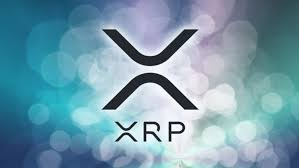

what is ripple anyway?

퍼거의 작업을 기초로 하고, 비트코인 탄생으로부터 영감을 받아, 리플은 2012년
리플 합의 원장(RCL, Ripple Consensus Ledger)을 암호 화폐 XRP와 함께 개
했습니다. 리플 합의 원장은 이후 XRP 원장(XRPL, XRP Ledger)으로 이름이 바
뀌었습니다.XRP 원장은 분산화된 경제 시스템으로서, 네트워크 참여자의 모든 회
계 정보를 저장할 뿐만 아니라, 다수 통화 간의 교환 서비스를 제공합니다. 리플
은 XRP 원장을 분산화된 오픈 소스 원장으로 소개하고 있으며, 이는 실시간 금융
거래를 가능하게 합니다.
계속 알아보세요!